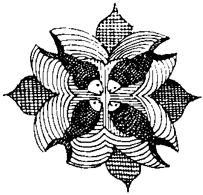

Başrav ile Sonrav’ın gelişlerini de anlatırsam, şu on üç yıldaki konuklarımın hepsini anmış olurum. Bu yitik Köktürk yolunun yönünü şaşırmış yolcularını birbirleriyle buluşturup kavuşturma başarımın üstünden çok geçmemişti ki, Hazar Kağanlığı’nın iki ulu ravı birden Güç Kulesi’ni ışıklı varlıklarıyla onurlandırdılar. Yanlarında bir de kağanlık Maşiahı olan aylıklı ibiş vardı.
Sanırım tutsaklığımın ortalarına doğruydu. Biraz geçmiş de olabilir. Bir güz günü geldiler. Daha önce gelen konuklarımın hepsinden farklıydılar. Bir defa koyunları koltukları dolu geldiler. Kımızlar, pastırmalar, yemişler, türlü türlü çörekler ve temiz, gıcır gıcır bir kaftan. Bir büyük sağrak dolusu kımız verdiler. Tadını unutmuşum. Yıllarca Ten Suyu’nun tutsaklar için özel olarak acıtılmış suyunu içmekten dolayı, kımızı ağzıma koyduğum zaman bozuk, sasık bir su gibi geldi bana, tükürdüm. Gülüştüler. İkinci yudum Uçmak’tan çıkmaydı. Üçüncü yudumda o kımızın yapıldığı Uçmak’ta, kanat çırpıp uçmaktaydım. Onlar benden bir şeyler öğrenmek için gelmişlerdi, ben onlardan o kadar çok şey öğrendim ki!
“Doğru mu” diye her sorduklarında, söz ettikleri konu her neyse bana onun pek güzel bir özetini yapmış oluyorlardı. Onlar konuştukça, gün ışığı bile göremeyen bir yoksulun yaşadığı kuleye neden Güç Kulesi gibi görkemli, tantanalı bir ad takıldığını anlar gibi oluyordum. Kulem ve ben, değil Sarkel’in, bütün batı Bozkırının ve galiba daha ötelerinin dilindeydik. Öz inananlar, eğer dikkatle bakarlarsa her ayın ilk günü kulenin en üst katının dörtte birinin apak bir ışığa boğulduğunu görürlermiş. Doğru mu?
“Doğrudur. Siz hiç görmediniz mi?” soruma iki rav ve bir Maşiah aynalı sazanlar gibi atlayıp gördüklerini söylüyorlar!
Karanlık deliğimde başımın üzerinde sürekli bir ışık dolaşıyormuş, doğru mu? Tavandan sızan ışığın altına gidip oturuyorum:
“Böyle mi?” diyorum. Üçü birden dut yemiş bülbüle dönüyor. Söylentilere göre kulemin tepesinde olduğum halde Sarkel’in tüm balıkçılarından daha çok balık tutuyormuşum, fazlasını pazarda sattırdığım yolunda dedikodular da varmış. En azından bazı kişiler, “gel... geeel... Maşiah balığına geeel...” diye açıktan bağırarak tuzlu balık satıyorlarmış. Ederi de diğer tuzlu balıkların beş katı filanmış! Öyle mi? İçimden Emgek’in anasına bacısına söverek, Başrav’ın elindeki mumu alıyorum, biriktirdiğim tuzlu balık yığınını gösteriyorum. Küçükdilleri tutuluyor. Maşiah’çık,
“Bunların tuzlu olduğunu ne bilelim?” diyor. Birini elime alıyorum. Maşiah bozuntusuna yemesi için uzatıyorum. Balık yarımının kuyruğuna yakın bir yerden bir kıt ısırdıktan sonra önümde yere kapanıyor:
“Rav, rav, bu karanlık delikte tuz bulup balığını tuzlayan rav! Maşiah! Senin ulu adına beni öne sürenlere kargış, lanet olsun, adoni beni bağışla! Ben kim, Maşiah olmak kim? Kahalde okumayı güç sökmüş bir yoksulum, benden peytaan bile olmaz! Yarlığa kulunu Maşiah!”
Karanlıkta görmüyorum ama, içtenlikle söylüyor bunları yoksul. Elimi gözlerine ve yüzüne sürüyorum. Sicim gibi gözyaşları iniyor yanaklarından.
“Adın ne oğlum?” diyorum babam yaşındaki adama yumuşaklıkla.
“Adoni, adım Yalım Çor! Biliyor musun Maşiah ben de senin...”
“Biliyorum Yalım Çor, sen de benim gibi Köktürk’sün aslında!”
Adam kaldırdığı başını bir kez daha döşemeye koyuyor. Ben ağır ağır sürdürüyorum konuşmamı.
“Yalım Çor! Gözyaşlarıyla, adı gibi kurumuş kalmış bozkırı yeşertecek yiğit! Senin adın bundan sonra Yaşıl Kır olsun. Sen benim Hazar’da tutan elim, görür gözüm olacaksın! Nasıl ki Bayındır Kohen’in kağan beği varsa ben de seni Maşiah beğ olarak atıyorum! Nasıl ki kasanların kavuranların kalesi var, kulesi var, kargısı var, kılıcı varsa senin de bundan sonra inanç dolu göğsün gibi sıradağların olsun! Korkma yiğit! Arkanda ben varım. Hele şu ravlardan hiç korkma! Sözde rav ürür, özde kervan yürür! Bildiğin gibi git!”
Daha çok söyleyecektim ki Başrav’ın kuşkucu sesi sesimi ikiye böldü:
“Hop... hop dedik Maşiah karalaması! Ten Suyu’nun iki yakasındaki her yoksulun evinde tuzlu balıktan bol ne var? Sen o tuzlu balığı şuracıkta dirilt, canlı kıl ki ben de senin kızılca kıyamete dek kündü Maşiah’ın olayım... hah... hah... houh... ay... kıahh!”
Köktanrı! Emek bizden, yardım senden! Dün Emgek ile yaptığım son alışverişi hatırladım! Dün akşam yemeğimi getirdiğinde o kadar yalvarmıştım,
“Emgek Ağam, şu getirip durduğun balıkların tazesini, canlısını getir! Bir küçük balığa yirmi tuzlu balık vereyim! Yeter ki ölmeden bir kez taze balık yiyeyim!” demiştim. Her zamanki gibi ağırdan aldı, ağırdan sattı kendini. Tok alıcı tutumları takındı. Yaz günü tuzlu balığı kim ne yapsınmış? Vur tut, otuz balıkta anlaştık. Sonra bu sabah, salakların salağı Emgek küçük bir deri tuluma koyduğu suyun içinde oynayıp zıplayan, yüzen, canlı bir balıkla geldi! Benim çok taze olsun anlamında söylediğim canlı balık sözünü olduğu gibi anlamış!
“Bak Tengere! Baban yapmaz bu iyiliği. Bu sabah tam iki saat erken kalktım bunu tutmak için!” dedi.
“Suyunu da içerim Emgek Ağam, böyle kalsın” dedim. Beş tuzlu balığa suyu da bıraktı. Ben de bu yeni gelen oyuncakla oynadım. Yüzgeçlerini, kanatlarını okşadım suyun içinde. Yemeye kıyamadım. Nasıl olsa ölecekti, ölene dek can yoldaşım olsun istedim. Bu, tam dört saat önce idi. Ne oldu acaba canlı balığıma? Keşke suyundan koca bir yudum almayaydım. Ölme canlı balık ölme, mucize çağıdır!
Yerimden fırladım. Biraz önce Yaşıl’ın daha Yalım iken ısırdığı ve yerde, gözümün önünde duran balığı çaktırmadan, bir tekme ile odamın karanlık köşelerine savurdum... Töre demetine yaslamış olduğum tulumun başına koştum. Elimi soktum. Karnı yukarda, sırtüstü dönen balık ölmek üzereydi. Solungaçları yavaş yavaş açılıp kapanıyordu. Balığı yakaladım. Canını dişine, kuyruğunu yüzgecine taktı, birden debelenmeye başladı. Konuklarımın yanına koşarken kuyruğuna yakın bir yerden dişlerimi gövdesine geçirip, kılçıksız yerinden bir diş aldım. Taze, tuzsuz, tatlı, canlı, titrek balık etini büyük bir keyifle yuttum. “Tanrı! Acaba mucize kotarmayı bir yana bırakıp hepsini yesem mi?” diye salakça bir düşünce usumdan geçmedi desem yalan olur. İki hoplayışta Başrav Un El Kaplan’ın yanına vardım. Gövdesinden hâlâ kızıl kan sızan ve iki kat fazla debelenen balığı eline koydum. O kadar salaklaşmış idi ki, o daha bir şey söyleyemeden aynı balığı Benyamin lncir’e ve Yaşıl’a da tutturdum. Yaşıl, çığlık çığlığa,
“Bu benim ısırdığım balık. Üzerinde hâlâ diş izlerim var, rav, rav Maşiah, ölüyü diriltti, tuzlu balığa can verdi!” diye bağırıyordu, kulesinde Maşiah Baha’nın!
Bütün ömürleri bet-din’de okuyup okutmakla geçen konuklarım, bir güz fırtınasında dallarından koparak yere inen kavak yaprakları gibi titriyorlardı! Titriyorlardı demek eksik olur, kendilerini bir yandan kaldırıp öbür yana vuruyorlar, alınları döşemeden kalkmıyordu. Ben bile bu görüntünün gücünden etkilendim! Işık yolu, dövüşe hazırlanan koçlar gibi kafa kafaya gelmiş Rav Kaplan ile Rav İncir’in kafalarının tam arasında dikdörtgen bir alanı aydınlatıyordu, yaralı balık bu ışıklı alanda son bir çabayla debeleniyor, gövdesi kıvrıla kıvrıla döşemenin tahtasına çarpıyor, her kıvrılışta gümüş pulları gün ışığında renkten renge giriyor, her çarpmada ravlar alınlarını, tok tok sesler çıkararak yere vuruyorlardı. Sonra balık kaskatı katıldı kaldı. Gövdesindeki yara değil, havasızlıktı yoksulu öldüren.
Yoksulun kaygan gövdesini yerden aldım. Yapışan tahta tozlarını çapanıma silerek temizledim. Küçük bir diş Kaplana, küçük bir diş lncir’e ısırttım. Ravlar ağızlarındaki çig lokmayı güçlükle yuttu. Kalanını ben yalayıp yutmaya başladım. Bitirmek üzereydim ki, Yaşıl acıklı acıklı inledi:
“Yoksulunu, canlı balıktan yoksun mu kılacaksın Maşiah?”
“Olur mu hiç oğlum, sana beyin taraflarını sakladım, ye de biraz akıllan hadi çocuğum...” diyerek elimdeki kılçıklı balık başını önüne attım. Usta bir kedi gibi kemirdi bitirdi balığı. Bir yandan da mırıldanıyordu:
“Rav... rav... mırnav... mırnav...”
Güç Kulesi’nden ayrılmak yeni inananlarımın içlerinden hiç gelmiyor gibiydi. Yaşamları boyunca hem gücü haklı göstererek, yasallaştırarak gücün ayakta kalmasını sağlamış hem de güce yaslanarak kendi yeme içme düzenlerini sağlama almış bu kişilerden tersini beklemek zaten salaklık olurdu. Yıllardır değişik sorunlar ile boğuşan, bir gün ortadan kalkması komşularının aralarında anlaşmasına bakan Aktürk, yani Hazar Kağanlığı’nın sonunun yaklaşmakta olduğunu, kendi sınıflarından olan kişilere has yetenekleri ile az buçuk kestiren ravlar ve yanlarındaki aylıklı soytarı, gücün artık bende, Güç Kulesi’nin, Migdal Oz’un beyinde olduğuna karar vermişlerdi. Bana nasıl yaranacaklarını bilemiyor, nasıl olup da göze girecekleri konusunda birbirleriyle kıyasıya kapışıyor, hırlaşıp duruyorlardı.
Başrav’a göre şimdi hep birlikte aşağı inecekmişiz, ben elimi kolumu sallaya sallaya kutsal tapınağa gidecek, toplanan tüm Hazar halkına, yitik yazılı Tora’nın bulunmasının an meselesi olduğunu, üç ay içinde kesinlikle bulunacağını, herkesin dengini dürmesini, göçe hazır olmasını, yakında atalarımızın kutsal topraklarına gitmek üzere olduğumuzu, şimdilik biraz beklemelerini söyleyecekmişim. Sonrav ise Maşiah bile olsam, var olup olmadığı kesin olarak bilinmeyen bir nesne konusunda böyle kesin söz verir bir tutumla konuşmamın pek iyi olmayacağını, “üç çağa kadar” gibi bir söz kullanmamın daha iyi olacağını söylüyordu. Başrav ise söyleniyordu:
“Oğlum tam yirmi üç yıldır yanımdasın. Hiçbir şey öğrenmeyecek misin sen? Yav, oturup yazacağız bir Tora. Kim bekler iki bin yıldır bulunamayan böyle bir şeyin gerçekten bulunmasını? Salak!”
Töre veya bunların dilinde Tora kabuklarını almak istedim. Heyecandan küçük, keçi derisinden tulumun orada olduğunu unutmuştum. Kabuk demetini çekince yana yattı, açık ağzından tatlı suların dökülmesine biraz acıdım ama vakit yitirmeden konuklarımın yanına döndüm. Sesimde benim bile şaştığım bir gizemli ton ile:
“Biz Tora mora yazmayacağız!” dedim.
Başrav sesinde coşkulu bir çınlama ile:
“Sen çok yaşa Maşiah! Kahrolsun Tora!” biçiminde sonradan pek üzüleceği bir çıkış yaptı. Ben hiç takılmadan sürdürdüm:
“Yazmayacağız. Çünkü yitik yazılı Tora elimizde” dedim. Üçü birden, “bu kadarı da fazla” der gibilerden birbirlerine baktılar. Her birinin eline birer Tora kabuğu verdim. “Okuyun bakalım” dedim. Ben Başrav’ın elinden mumu kaparak ayakta dikildim. Yaşıl, ışığın düştüğü yere yattı. Diğer ikisi yine kafa kafaya verip mumun çevresini aldılar. Her biri bir ağızdan okumaya başladı. Güç Kulesi bir tapınağa döndü. Susturdum. Şaşkınlıkları sevinçlerinden çok olduğu için, kendilerini yerlere fırlatmadılar. Maşiah beğ konuşan ilk kişi oldu:
“Rav, iyi ama bu Tora’yı ben bile anlıyorum, bayağıca bir Türkçe ile yazılmış bu.”
“Oğlum, atalarımızın nece konuşmasını bekliyordunuz ki?”
Başrav ağır ağır konuştu:
“Rav, belki de doğrusu budur. Ama biz Aramice veya İbranice bir şey bekliyorduk. Biraz şaşırdık. Bundan da önemlisi, anladıkları bir yazı, insanların gözünde kutsal olmaktan çıkar. Ben bile şey... Ne desem, biraz tuhaf oldum... Biz bu halkı bu Türkçe Tora ile etkileyemeyiz! Şu bizim Yal... şey, Yaşıl’a baksanıza! Tora okurken bu ne saygısızlık! Ayaklarınıza kapanıyorum, size yalvarıyorum, bu Tora, Güç Kulesinin sırlarından biri olarak kalsın. Söz verilmiş ülkemize ulaşınca istediğiniz gibi açıklarsınız! Rav, Maşiah...”
İşin doğrusu, bu Tora’yı ortaya çıkarmak umduğum etkiyi yapmamıştı. Belki de kötü bile olmuştu. Bu iki rav biraz teğeli ters giymiş, hafif de kuşkucu bir tutum almışlardı. İçlerinden yalnız Yaşıl Kır’ın gözlerinde o inanmış ama gerçekten de biraz saygısız, senli benli bakışı görüyordum artık. O salak da şimdi şımarıp, yüz bulup, tuzlanmış ölü balıklardan birkaçını daha canlandırmamı istemeden, bu üçlüyü bir an önce buradan sepetlemeliydim.
“Tüm sıkıntınız halkı etkilemek olsun! İsterseniz şu kuleyi ateşe verir yakarız. Korkacak ne var? Nasıl olsa üçünüz de arı gönüllü, duru inançlı değil misiniz? Yanar odun içinden çıkan semenderler gibi yangından çıktığımızı gören insanların herhangi bir kuşkusu kalabilir mi?”
Başrav, biraz çekinceli sordu:
“Mumla mı yakacağız Maşiah?”
“Yok canım! Tanrı ateşi varken iki saat kim mumla uğraşacak şimdi?”
Üçü birden ayaklandılar. Yok, onlar önden inip biraz kalabalık toplayalarmış. Sonra benim tek başıma alevlerin arasından çıkmam daha etkileyici olurmuş... Zaten Sarkel’de dolaşan böyle bir söylenti varmış, Tanrının kırbacı şaklamaya başladığı zaman Güç Kulesi yer ile bir olacak ve Maşiah elinde bir yay ve oklar olduğu halde alevlerin arasından sıyrılıp çıkacakmış! Bundan herkes eminmiş, yalnız Maşiah’ın elindeki okların sayısı pek bilinemiyormuş! Üçoklar, üç ok, Bozoklar, beş ok olacak diyormuş. Kısa bir ikircikten sonra o günkü son oyunumu oynamaya karar verdim.
“Peki, gidin. Gidin ve kehanetin gerçekleşmesini bekleyin! Ama mademki sizler benimsiniz, bana tüm yüreğinizi verdiniz, size son bir görüntü göstermek isterim. Hepiniz yumun gözlerinizi ve ona kadar sayın!
Bunlar sayarken yerimden fırladım, yay ve oklarımı kaplığım gibi karşılarına dikildim. Gözlerini açlıkları zaman gördüklerinden etkilenmiş gibi duruyorlardı. Yine yere kapanıp alınlarını döşemeye koydular. Elimdekileri sessizce karanlığa doğru iteledim. Bu son gösteri ile, Maşiah’ın perdesi o günlük kapandı. Kapının önünde nöbet tutan dalkılıç erlere haber verdiler, yuvarlanır gibi, birbirlerini ezerek, Güç Kulesindeki odamdan çıktılar. Kanımca beş dakikadan daha az vaktim vardı. Yayımın kirişinin bir ucunu dişlerimle çözdüm, oklarımı kirişin bir kısmı ile sıkıca bağladım, daha önce sökerek elimde hazır tuttuğum kemik parçasını “penceremin” hemen önüne çaktım. Ünce yayı, sonra kirişe bağlı okları dışarı sarkıttım ve kirişin boştaki ucunu kemiğe bağladım. Bir Töre sayfası ile pencereyi kapadım. Koşarak ışığımın altına geçtim, bağdaşımı kurdum oturdum.
Kapım büyük bir gürültüyle açıldı. Bizim Karakaşlar ve üç başka er, ellerinde meşalelerle içeri daldılar. Odamı ilk kez bütünüyle, bu kadar iyi görebiliyordum. Tanrım ne kadar küçükmüş! Yüksek tavana, köşelerden birinde kenef olarak kullandığım deliğe, yerlerdeki yiyecek artıklarına, yeni kaftana, Selenge’den beri yanımdan hemen hiç ayırmadığım yassıca dengime, erlerin sağa sola dağıttığı Töre’ye, altını üstüne getirdikleri balık yığınına, sanki tavan yarılmış da güneş içeri düşmüş gibi bir ışık altında, gözlerim kamaşarak baktım. Sıkı bir arama sonunda aradıklarını bulamadılar, İtbaş daha fazla duramadı:
“Ravların gözüne elinde yay ve okla görünmüşsün!”
“Evet, göründüm! Onlar da gördü.”
“Nerede o yay ve oklar?”
“Gözleri açıktı ama onlar bir düş gördüler. Sen uyanınca düşünde gördüğün kızlara dokunabiliyor musun, a şaşkın?” Erlerden biri dayanamadı:
“Yoksul, düşünde de dokunamıyor ki!”
İtbaş’ın öfkeli bakışlarına aldırmadan hepsi yüksek sesle gülüştüler. Olan İtbaş’ın el koyduğu yeni kaftanıma oldu. Tutsakçılarım ile korçular çıkar çıkmaz, biri dışardan görür düşüncesiyle okumu yayımı geri çektim.
Tanrı’m, karanlığıma ne kadar alışmışım! Bana karanlığı veren Tanrı’ya binlerce sağ ol! Namo karanlığa! Odam karanlık olmasaydı, ben kendimi bu mezarda uçsuz bucaksız bir bozkırdaymış, dipsiz sınırsız bir gök altındaymış gibi hissedebilir miydim hiç? Odam karanlık olmasaydı, ben içeri girenin ışık olduğunu bilebilir miydim? Odam karanlık olduğu için, içine etliğim deliği görememek çok mu büyük bir eksikti? Daha önce yalnızca aydınlatarak ortadan kaldıracağım bir şey, Maşiah olmak için bir basamak, aydınlığa giden yolda bir aşama olarak gördüğüm, yok etmeyi kurduğum karanlık üzerine başka düşünceler geliştirdim. Acaba karanlık yok edilmeli miydi? Artık emin değildim. Bize derinlik, sonsuzluk, büyüklük, bilinemezlik, kutsallık duygularını veren bir şeye bütünüyle yararsız denebilir mi?
Peki ya insanlar? Ya ben gerçekten bir Maşiah olsam, güneş gibi, küçük dar dünyalarını aydınlatsam? Çok mu beğenecekler başlarına geleni? Benim gibi, içine ettikleri bir acunda yaşadıklarını anlamak mutlu mu edecek yoksulları? Kişiyi tutsak olduğu kuleden çıkaramadıktan sonra çevresini aydınlatmışsın, neye yarar? Ya kişinin tutuklu olduğu yer kendi kafatası kemikleriyle kuşatılan beyninde ise? Ya kişinin kulesi, kişinin kendi göğüs kafesinde ise? Ya kişi kendi kaburgalarından örülmüş bir duvarın içindeyse? Kişiyi kurtarmak için duvarı mı deleceksin ey lengere? Bilemiyorum, gelen giden çok olunca, yoğun bir gün yaşayınca insanın kafası karışıyor.
Bakalım bugün gelen gidenlerim ne yapacak? Un El Kaplan denen yaratığın yaptığı ilk şeyi biraz önce gördüm zaten! Başıma tutsakçıları salanın o olduğunu adım gibi biliyorum. Bu inançsız kof eri inandırmak için, değil tuzlu balığı diriltmek, balığın içinden bir de cüce Yunus Yalavaç çıkarıp büyütsem yine olmaz! Yaşıl Kır yoksulunu ise yüzde yüz kazandık say. Benim yüzümden ölmese bari. Ortada ise Benyamin İncir var. Bu kişi tam bir bilmece. Rengini, safını belli etmez etmez, sonra yelin ufacık bir kımıldanışında döner fırıldak olur. Dede’nin bununla ilgili aktardıklarını hatırlıyorum. Oğuz Yabguluğu’nun başkenti Yengikent’te doğmuş olmasına karşın, konukluğa gelen Oğuzları tanımazdan geliyor, Batı’dan, Frank ellerinden geldiğini söylüyormuş. Rav olmadan önceki adı öz Oğuzca, Börüdöşü imiş. Bunu biraz İbranileştirip Benyamin İncir yapmış, ama kasım kasım kasılarak herkese Frank elindeki adının Benjamin Ficus olduğunu söylüyormuş. Böyle civelek bir arkadaş! Her şey beklenir, bakarsın bizden olur, bakarsın öbür yandan. Kesin olan bir şey var, eğer kazanırsak üçü de bizden olur.
Simdi çok yorgunum ve uyumak istiyorum. Göklerin sonsuzluğuna açılan kapının, tavandaki deliğin tam altına yüzümü getirip, sırtüstü yatıyorum. Delikten bana göz kırparak evrenin ne kadar kalabalık olduğunu muştulayan Magen David’ler görünüyor. Belki de o yıldızlardan birinin üzerinde benimki gibi bir Güç Kulesi vardır. Bana biraz benzeyen ya da hiç benzemeyen bir yaratık, orada benim gibi tutukludur ve kendi deliğinden bakıp benim şu düşündüklerime benzer şeyler düşünmektedir. Gözlerimi kapatarak, beni bir tüy yufkalığı ve yeğniliği ile kuşatan sevgili karanlıktan bir kınntıyı alıp götürüyorum benliğimin derinliklerine. Yüzümün derisi serseri bir yürek gibi atıyor, baldırımda bir kas seğiriyor ben istemesem de. Uyur ile uyanıklık arasında, özüm ile tözümün et ile tırnak gibi birbirine kenetlendiği yerde, Abınçu Kız’ı görüyorum yüreğimin güç kulesinde.
Orhon Irmağı’na doğru doludizgin at koşturuyoruz birlikte. Sonra atını bir yara doğru sürüyor. Vay deli Abınçu! Kız bu ne gidiştir, sen böyle at sürer miydin? Peşinden at koparıyorum, dur bekle! Nereye Abınçu? Altımız uçurum! Altımızdaki uçurum canlı. Altımızdaki uçurumun uzun kolları var. Altımızdaki uçurumun dibinde su yok! Şaşkınlıkla yüz adım öne, yüz adım arkaya bakıyorum. Irmak ağır ağır akıyor oralarda ama bulunduğumuz yarın tam altında su yok! Ne akan, ne uçurumun içine düşen. Ne düden, ne çağlayan! Baktığım uçurumun hiç sonu yok, sen de görüyor musun Abınçu? Haydi Abınçu, haydi kızım, haydi olmayan gelinim, haydi dönelim. Kurak uçurumlarda işimiz ne bizim?
Abınçu Kız atını uçuruma sürüyor. Yüzünde “alçak tosbağa, korkak cırbağa, ödlek kurbağa” diyen küçümseyici bir gülümseme. Abınçu Kız, senin karşında Tengere Tardu var. Hem Tigin, hem Maşiah, yüreğinde derin bir ah, kendi geliyor, özü geliyor, geliyor peşinden o kağan, o hazar, o fağfur, geliyor o şah! Dön ayağı da ikinci eklemlerinden kesilmiş, kısa bacaklı, toynaksız, güdük, badi badi koşan Azman alımı uçurumun kollarına bırakıyorum. Üzülmüyorum. Bütün bozkır bilir ki, atın bacaksızı iyidir. Abınçu benden biraz altta, ne de olsa Köktürk ülkesine kuzeyden aparılmış bir kırnak olduğu için atının başını boşlukta pek tutamıyor, döne döne, tepetaklak, düşüyor. Ayakları yukarı geldiği zaman çapanı boydan boya açılıyor, içine hiçbir şey giymemiş yabanın Abınçu’su, beyaz, kalın, uzun bacakları sere serpe görülüyor. Ben, gökte düşerken bile atına kanat olan Tigin, yakalamak için son bir hamle yapıyorum. Abınçu’nun çapanı elime geçiyor. Atı düşmeye devam ediyor! Yırtık çapanı elimde, Abınçu’nun uçurumun özüne gömülen yarı çıplak güzelliğine yanıyorum. İnce belinin yarısı ile tek göğsü açıkta. Bekle Abınçu, beni o kılığınla Uçmak’ta bekle... Yoo, Azman’ın kanlı bacakları boz yeşil serin sulara dalıyor. Uçurum kapanmış. Yerine yeniden Orhon dolmuş! Gözyaşlarım Orhon’a akıyor.
Tatlı bir ses:
“Ağlama Tigin, ağlama ben varım artık” diyor.
Selçuk! Selcük’ün sesi bu. Büyümüş, bilmem hangi yamaçlardan kaymış Selcük? Koca bir sel, bir ulu ırmak olmuş. Halka halka akan, olduğu yerde girdaplar yaparak dönen, döndükçe hızlanan mavi boz ırmakta küçük kara adacıklar var. Adacıklar hızdan dolayı birleşip çizgileşiyor, ufukları kuşatıyor, uzuyor, uzuyorlar... Azman bu kez yarısı ısırılmış bir balık oluyor, balığın kaygan sırtı eyer tutmuyor, balık suya dalıveriyor... Ben yüzme bilmeyen bir eyerin sırtındayım. Hiç koca Orhon Suyu eyerlenir mi? Boğuluyorum... Uyanıyorum, alnıma çarpan iri soğuk yağmur taneleri beni uyandıran.